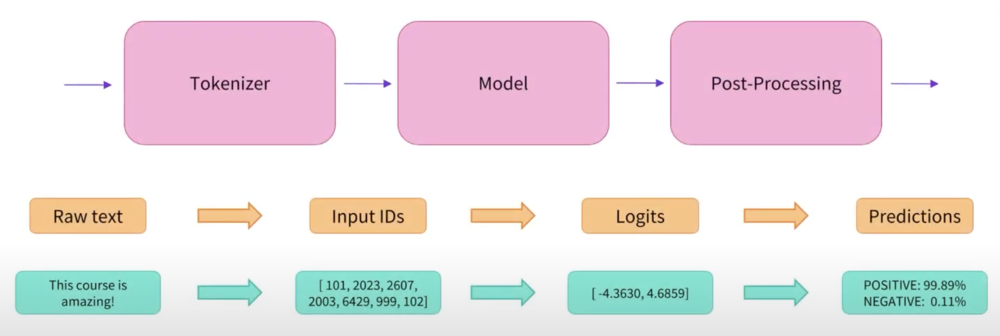
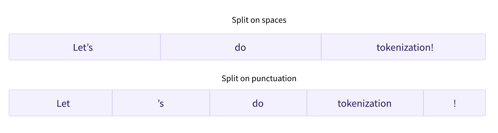
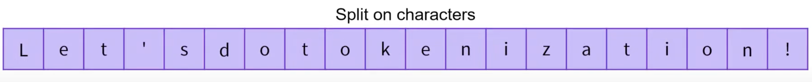

What is Tokenizer?How Many Types of Tokenizers Mainly Used?Word-based TokenizerCharacter-based TokenizerSubword-based Tokenizer
In the field of Natural Language Processing (NLP), a tokenizer is a computational tool or component that is responsible for segmenting text into smaller units (words or subwords) called tokens, which then are converted to ids through a look-up table. The primary purpose of tokenization is to break down textual data into meaningful chunks that can be easily processed and analyzed by subsequent NLP algorithms and models.
Tokenizers play a crucial role in a wide range of NLP applications, such as text classification, named entity recognition, machine translation, and text generation. By dividing text into tokens, tokenizers enable NLP systems to understand and manipulate the underlying linguistic units more effectively.
The tokenization process varies depending on the specific requirements of the task and the linguistic characteristics of the language being processed. For instance, in English, tokenization typically involves splitting text based on spaces and punctuation marks, resulting in individual words as tokens. However, tokenization can be more complex in languages where words are often concatenated, such as German, or where there is no clear word boundary, such as Chinese.
Tokenizers can be rule-based, employing predefined rules to determine token boundaries, or statistical, utilizing machine learning models that have learned tokenization patterns from large text datasets. Additionally, tokenizers may encompass additional functionalities, such as converting tokens to lowercase, stemming, or lemmatization, to further refine the tokenized output before subsequent analysis or modeling.
The quality and accuracy of tokenization significantly impact the performance of downstream NLP tasks and models. Thus, tokenization is a critical preprocessing step in NLP, allowing for effective text processing and enabling the extraction of meaningful information from textual data.

Splitting a text into smaller chunks is a task that is harder than it looks, and there are multiple ways of doing so. For instance, let’s look at the sentence: "It's a nice day. Let's go hiking!"
A simple way of tokenizing this text is to split it by spaces, which would give:
xxxxxxxxxx11["It's", "a", "nice", "day.", "Let's?", "go", "hiking!"]This is a sensible first step, but if we look at the tokens "day." and "hiking!", we notice that the punctuation is attached to the words "day." and "hiking!", which is suboptimal. We should take the punctuation into account so that a model does not have to learn a different representation of a word and every possible punctuation symbol that could follow it, which would explode the number of representations the model has to learn. Taking punctuation into account, tokenizing our exemplary text would give:
xxxxxxxxxx11["It", "'s", "a", "nice", "day", ".", "Let", "'", "s" "go", "hiking", "!"]Better. However, it is disadvantageous, how the tokenization dealt with the word "Don't". "Don't" stands for "do not", so it would be better tokenized as ["Do", "n't"]. This is where things start getting complicated, and part of the reason each model has its own tokenizer type. Depending on the rules we apply for tokenizing a text, a different tokenized output is generated for the same text. A pretrained model only performs properly if you feed it an input that was tokenized with the same rules that were used to tokenize its training data.
The first type of tokenizer that comes to mind is word-based. It’s generally very easy to set up and use with only a few rules, and it often yields decent results. For example, in the image below, the goal is to split the raw text into words and find a numerical representation for each of them:

spaCy and Moses are two popular rule-based tokenizers. Applying them on our example, spaCy and Moses would output something like:
xxxxxxxxxx11["It", "'s", "a", "nice", "day", ".", "Let", "'s", "go", "hiking", "!"]As can be seen space and punctuation tokenization, as well as rule-based tokenization, is used here. Space and punctuation tokenization and rule-based tokenization are both examples of word tokenization, which is loosely defined as splitting sentences into words. While it’s the most intuitive way to split texts into smaller chunks, this tokenization method can lead to problems for massive text corpora. In this case, space and punctuation tokenization usually generates a very big vocabulary (the set of all unique words and tokens used). E.g., Transformer XL uses space and punctuation tokenization, resulting in a vocabulary size of 267,735!
Such a big vocabulary size forces the model to have an enormous embedding matrix as the input and output layer, which causes both an increased memory and time complexity. In general, transformers models rarely have a vocabulary size greater than 50,000, especially if they are pretrained only on a single language.
Pros:
|
Cons:
|
While character tokenization is very simple and would greatly reduce memory and time complexity it makes it much harder for the model to learn meaningful input representations. E.g. learning a meaningful context-independent representation for the letter "t" is much harder than learning a context-independent representation for the word "today". Therefore, character tokenization is often accompanied by a loss of performance.

Pros:
|
Cons:
|
So to get the best of both worlds, transformers models use a hybrid between word-level and character-level tokenization called subword tokenization.
Subword tokenization algorithms rely on the principle that frequently used words should not be split into smaller subwords, but rare words should be decomposed into meaningful subwords. For instance "annoyingly" might be considered a rare word and could be decomposed into "annoying" and "ly". Both "annoying" and "ly" as stand-alone subwords would appear more frequently while at the same time the meaning of "annoyingly" is kept by the composite meaning of "annoying" and "ly". This is especially useful in agglutinative languages such as Turkish, where you can form (almost) arbitrarily long complex words by stringing together subwords.
Subword tokenization allows the model to have a reasonable vocabulary size while being able to learn meaningful context-independent representations. In addition, subword tokenization enables the model to process words it has never seen before, by decomposing them into known subwords.
For instance, the BertTokenizer tokenizes "I have a new GPU!" as follows:
51>>> from transformers import BertTokenizer2
3>>> tokenizer = BertTokenizer.from_pretrained("bert-base-uncased")4>>> tokenizer.tokenize("I have a new GPU!")5["i", "have", "a", "new", "gp", "##u", "!"]Because we are considering the uncased model, the sentence was lowercased first. We can see that the words ["i", "have", "a", "new"] are present in the tokenizer’s vocabulary, but the word "gpu" is not. Consequently, the tokenizer splits "gpu" into known subwords: ["gp" and "##u"]. "##" means that the rest of the token should be attached to the previous one, without space (for decoding or reversal of the tokenization).
As another example, XLNetTokenizer tokenizes our previously exemplary text as follows:
51>>> from transformers import XLNetTokenizer2
3>>> tokenizer = XLNetTokenizer.from_pretrained("xlnet-base-cased")4>>> tokenizer.tokenize("Don't you love 🤗 Transformers? We sure do.")5["▁Don", "'", "t", "▁you", "▁love", "▁", "🤗", "▁", "Transform", "ers", "?", "▁We", "▁sure", "▁do", "."]We’ll get back to the meaning of those "▁" when we look at SentencePiece. As one can see, the rare word "Transformers" has been split into the more frequent subwords "Transform" and "ers".
Unsurprisingly, there are many more techniques out there. To name a few:
You should now have sufficient knowledge of how tokenizers work to get started with the API.